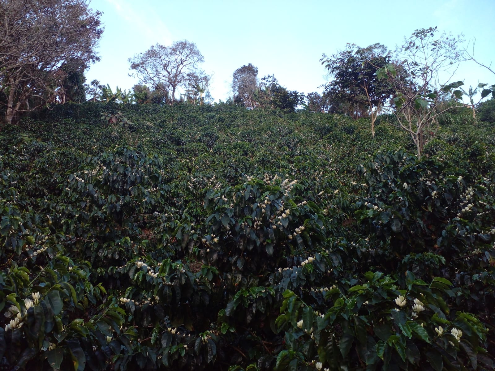
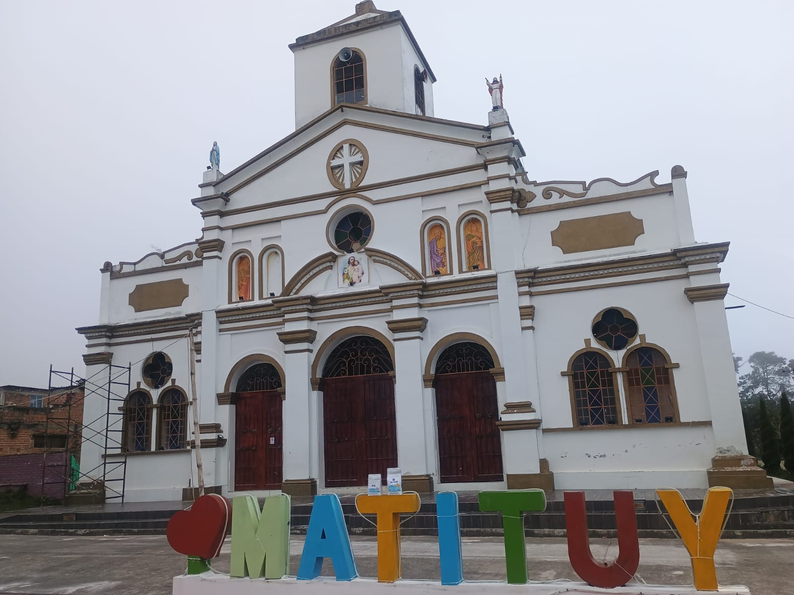
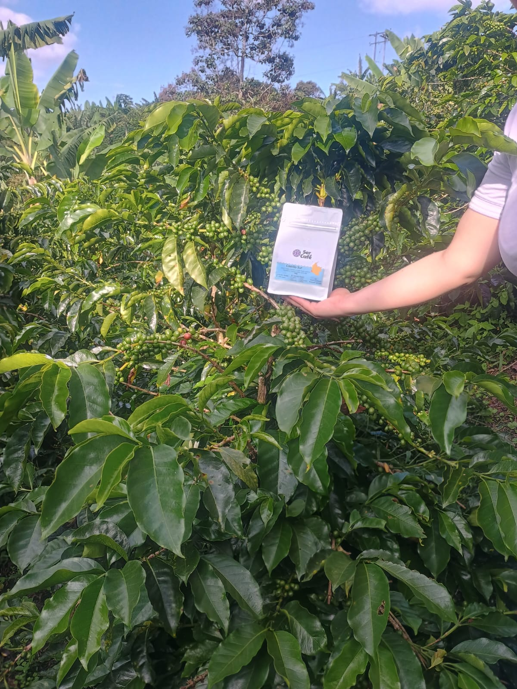

Desde las montañas de Nariño, llevamos café de origen a tu taza.
Somos descendientes de una familia cafetera con más de 30 años de tradición en el cultivo de café en las montañas de Nariño.

Hoy continuamos ese legado con el mismo compromiso: ofrecer un café auténtico, de origen, que refleje el alma de nuestra tierra en cada taza.

Nuestra historia comienza en la finca Lucitania, donde generación tras generación ha aprendido a respetar la tierra, entender los ciclos del café y perfeccionar cada proceso, desde la siembra hasta la cosecha.

1.978 msnm, condiciones ideales para café de alta calidad.
Selección cuidadosa de cada grano en su punto exacto.
Procesos artesanales que conservan el perfil del café.
Resaltamos notas frutales a Naranja y grutos negros, aromas a chocolate, caramelo y acidez cítrica.
Ubicada en La Florida, Nariño, nuestra finca es el corazón de todo lo que hacemos. Aquí cultivamos variedades seleccionadas en condiciones únicas que dan como resultado un café con carácter y personalidad.

Nuestro café es el resultado del trabajo de manos expertas, familias que han dedicado su vida al café y que hoy siguen cuidando cada detalle con pasión.
Creemos en un café que valore el origen, respete al productor y ofrezca una experiencia auténtica al consumidor. Apostamos por calidad, sostenibilidad y el orgullo del café colombiano.